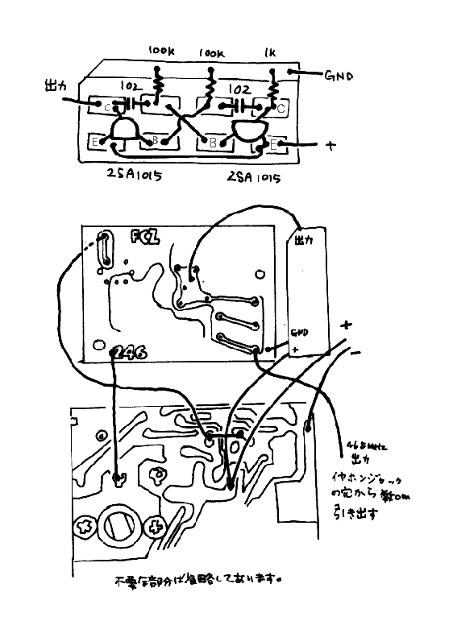

100円ラジオで流星の電波観測用MUレーダーを聞くクリスタルコン
バータは完成しても46.5MHzがバリコンのどこかと云うことが分かりにくいと云う欠陥があります。
特に製作講習会で一度に沢山の台数を製作する場合にはSGがあれば良いのですが、それがないと問題になりそうです。
そこで同じ100円ラジオを改造して「MUレーダーSG」を作りました。
まだ走り書きですが回路図を示します。
|
|
回路構成は、１００円ラジオの局部発振周波数と#251で使う 27.205MHzの水晶で作った45.341MHzを混合させ46.5MHzを合成させると云うものです。(あらかじめ#251 MU受 信機の内容を頭に入れておいてください)
100円ラジオの局部発振はバ−アンテナをはずしたA'とB'を直結した所から取り出し、クリスタルコンバータの入力に入れます。
100円ラジオの局部発振周波数は本来受信する周波数+455kHzですから46.5MHzを得ようとすると、
46.5-45.341-0.455=0.704
すなわち受信ダイアルを 704kHz に合わせれば良いことになります。
MUレーダーはパルス変調が掛かっていますから、出力する信号もそれらしくパルス変調を掛けてみました。 2SA1015 2個で構成するマルチ バイブレ−タがそれで、電源そのものをON/OFFしています。
クリスタルコンバータ部の製作はLCに変更はありますがMUレーダー用のクリスタルコンバータとほぼ同じですからここでは特に記しません。
マルチバイブレータの部分の実体配線図と総合配線図を下に示します。
|  |
このままではダイアルを廻すことによって周波数は大きく変化しますからどこが46.5MHzか判りません。そこで出力を46.5MHzに設定して やる必要が生じます。
とりあえずMU SGから信号が出ていることを確かめて下さい。 この動作確認が済んだら基板類を固定します。
周波数を正確に設定できる受信機がありましたらAMモードで46.500MHzを受信してください。 アンテナはなるべく小さなものにして入力を 絞ります。 MU SGを働かせ、上記の受信機で信号が受かるように100円ラジオのダイアルを廻します。Sメータがあればその指示が最大になるようにします。 これで 46.5MHzの信号が発射されたことになります。
周波数カウンタを使う場合はマルチバイブレータの回路の電源と出力をショートさせ(変調回路をカットする)、出力の周波数を46.5MHzになる ように調整します。 パルス変調を掛けた状態でカウンタを働かせるとパルスのOFFの部分でカウントしませんので正確な周波数が測定出来ませんから御注意 下さい。
較正が終りましたら100円ラジオのダイアルが動かないようにセロテープ等で固定します。
MU SGを働かせておいて、#251 MU受信機のダイアルをMU SGの信号が聞こえるようにセットしてからダイアルをテープ等で固定します。
#251 MU受信機の較正を行う時はその都度改めて較正することをお薦めします。